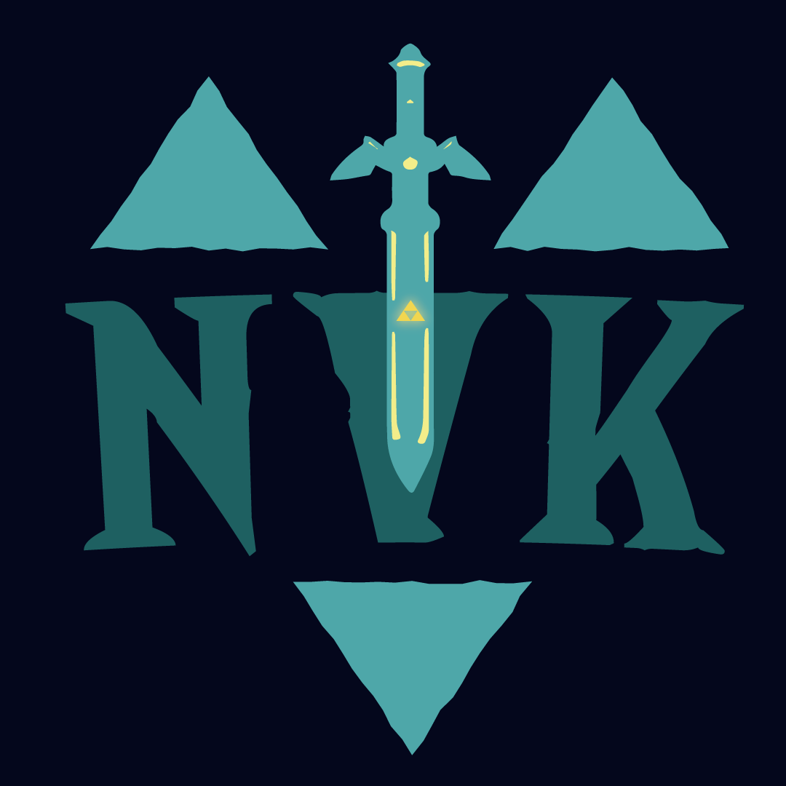
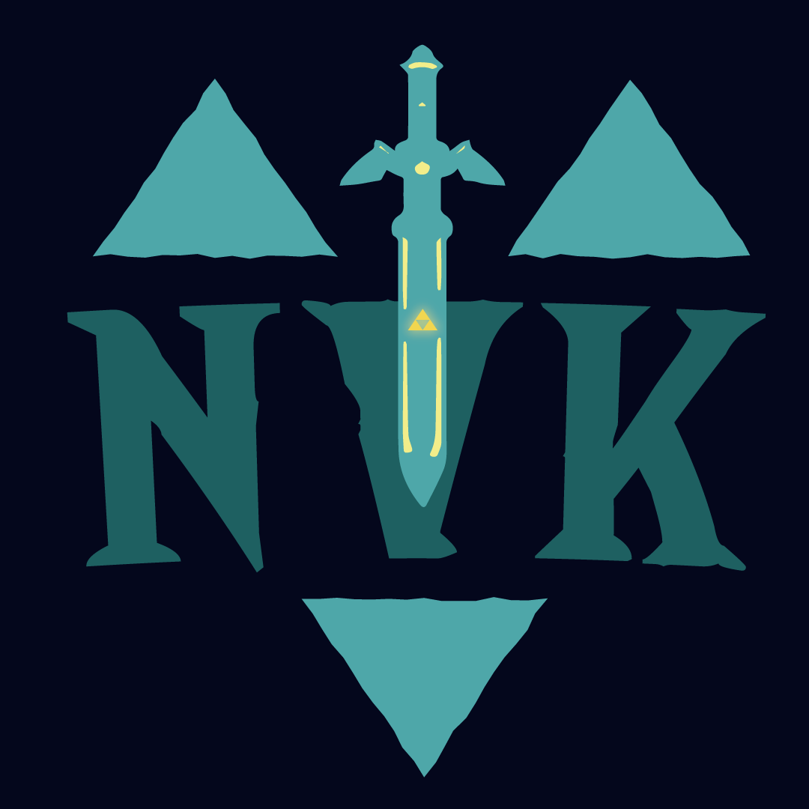

Logo de Nevenkebla
Le logo a été entièrement refait par mon ami Glenn Delame. Seules les couleurs principales ont été conservées. Une épée, ainsi que plusieurs formes et une nouvelle couleur, ont été ajoutées. Plusieurs variations du logo ont également été créées.
Création
Comme beaucoup de personnes sur Internet, j'ai utilisé plusieurs pseudos avant d'adopter celui de NevenKebla. Ayant grandi avec YouTube et ses créateurs de contenu, j'essayais, pour chaque pseudo que j'utilisais, de créer mon propre logo. Cela consistait souvent en un mélange des lettres des syllabes de mon pseudo. N’ayant pas de formation en infographie, le résultat n’était pas toujours esthétiquement réussi. C’est dans cette logique que j’ai voulu avoir un logo lorsque j’ai adopté le pseudo de NevenKebla.
J'avais déjà une idée de ce à quoi je voulais que mon logo ressemble : un mélange des lettres N et K.
Le K serait doublé et subirait un effet miroir, formant ainsi un losange au centre du N.
Étant un grand fan de la saga The Legend of Zelda, je souhaitais également y incorporer l’épée de légende.
Ma couleur préférée étant le bleu, j’ai donc opté pour différentes nuances de bleu dans mon logo.
C’est avec ces idées en tête et les connaissances en infographie acquises lors de mon DUT MMI
que j’ai réalisé la première version de mon logo.
Logiciels utilisés :
Refonte
Pendant mon DUT MMI, j'ai rencontré des personnes spécialisées en infographie,
dont Glenn Delame,
que je trouvais plus talentueux que moi dans ce domaine.
Je lui ai donc demandé s’il pouvait retravailler mon logo pendant son temps libre pour voir s'il pouvait l'améliorer.
Les seules contraintes que je lui avais données étaient de conserver les couleurs et d'inclure des références à la saga Zelda.
Il a gentiment accepté et m’a rapidement proposé plusieurs variations.
Étant très indécis, je lui ai demandé si je pouvais utiliser toutes les variations qu'il avait réalisées.
Parmi celles-ci, l'une m'a particulièrement plu, et c’est celle qui est actuellement visible sur mon portfolio.
Logiciel utilisé :